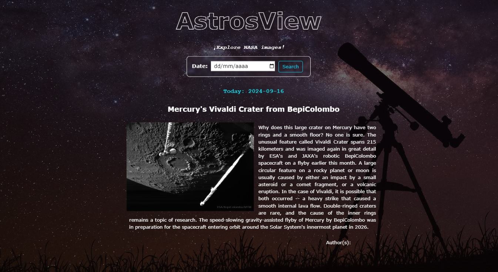

{ AstrosView }

AstrosView es un Website desarrollado bajo la modalidad de práctica profesional, que utiliza una API llamada APOD (Astronomy Picture of the Day), perteneciente a la agencia espacial NASA. A través de esta API, el website permite conocer y explorar en primer plano las imágenes que son publicadas diariamente por la agencia espacial. El contenido a mostrar es un artículo de prensa de carácter científico con su respectiva autoría. El website cuenta con un motor de búsqueda tipo calendario, que permite filtrar información de acuerdo a la fecha seleccionada. Si deseas conocer más sobre este proyecto ingresa a el perfil de Github AstrosView